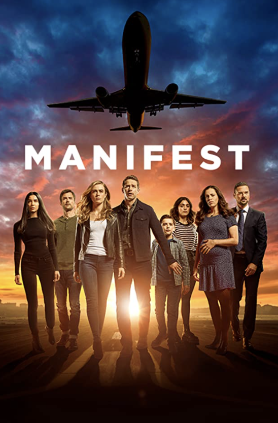
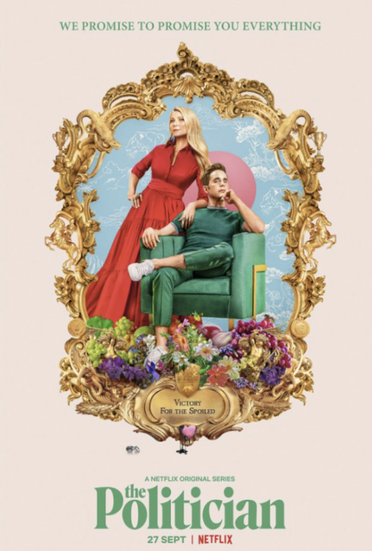

It's sad to abdmit but watching TV is one of my favorite things to do in my free time. I get so invested in shows I can't stop watching, even at 1:00 a.m. With so many streaming services, it makes it so easy to watch shows. Below, I'll list a couple of my favorite shows and a short description of each. Don't worry though, no spoilers!
Gossip Girl (photo by: Netflix)
Gossip Girl is an older show produced in 2007. It follows the lives of privileged students at a private school in Manhattan's Upper East side. Their secrets start to get revealed when an unknown source, named Gossip Girl, share text-messaged scoops on scandals and heartache. Gossip Girl follows them out of high school and as some of the graudtes attend college, she continues to stir the pot and feed into potential scandals. It isn't until the end of the show when the shocking identity of Gossip Girl is finally revealed.
Dead To Me (photo by: Netflix)
Dead to me focuses on a family in a small town. The main character, Jen, looses her husband in a hit-and-run in her own niehgborhood and becomes obsessed with solving the crime. The other main character, Judy, has also recently suffered a loss. With the grief too hard for either to bear alone, they join and meet at a support group. They become friends despite their polar opposite personalities. However, Jen's dark secret has the power to ruin their friendship and her life as she knows it. The show explores the dweirdly funny sides of grief, loss and forgiveness.
Manifest (photo by: Hulu)

When flight 828 lands safety after a long, turbulent flight, the crew and passengers are relieved. But in the time it took for the plane to land, the world has aged 5 years - and after mourning their losses, their friends, families and colleagues had given up hope and moved on. Now, they're all given a second chance but as they accustom to their new lives, some of the passengers realize they might be meant for something greater than they ever thought possible.
The Politician (photo by: Netflix)

Wealthy high school student Payton Hobart has known his whole life that he was going to be president of the United States one day. The first step in achieving this goal is to become student body president at school. In order to do this, he'll have to naviagte the treacherous political environment of his high school. competing against the best and only the best. He is convinced this victory will secure his spot at Harvard becoming one step closer to the presidency. Payton battles his morality and personal issues throughout the show making for a great political drama.